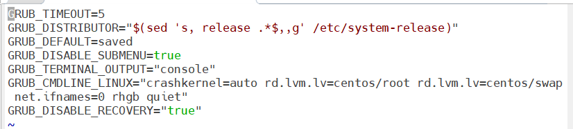
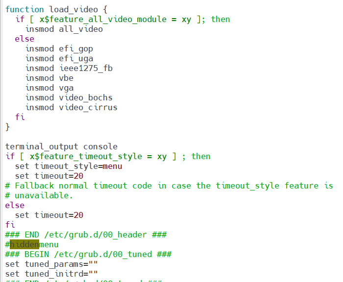

 class="img-fluid rounded shadow"
alt="Systemd and Linux Troubleshooting">
class="img-fluid rounded shadow"
alt="Systemd and Linux Troubleshooting">
Article Overview
- Topic: Systemd Timer Troubleshooting
- OS: Red Hat Enterprise Linux 7
- Services: HTTPD, MariaDB, SSH
- Focus: Stability & Performance
- Author: Awash Maskey
Systemd Timer Value Troubleshooting in Red Hat Linux 7
This article documents a real-world troubleshooting scenario involving systemd timer delays, Apache HTTP Server failures, database errors, network misconfigurations, and GUI loading issues in a Red Hat Enterprise Linux 7 environment. The objective was to identify root causes, stabilize services, and recommend long-term corrective actions.
Summary of Issues Identified
1. Apache HTTP Server Errors
- Unclean shutdowns and failed HTTPD service starts
- AJP backend connection failures on
127.0.0.1:8009 - Timeout errors such as
ajp_ilink_receive() can't receive header
2. MySQL / MariaDB Errors
- InnoDB log file size mismatches with
.cnfconfiguration - Failure to register InnoDB as a storage engine
- Slave I/O thread reconnect failures
- Lost MySQL connections during queries
3. SSH and Key Verification Issues
- Repeated
Host key verification failederrors - Missing SSL key and certificate files (
https.key,https.crt)
4. GUI Loading Delays
- GUI not loading on first attempt across multiple VMs
- Large volume of PCAP files under
/home/squire/pcap/
5. Network Configuration Issues
- Missing prefixes and incorrect netmask values
- Incomplete network scripts affecting routing and bonding
6. Red Hat Subscription & Package Issues
- Expired Red Hat subscriptions
- SSL certificate and configuration file inconsistencies
Actions Taken
- Increased
TimeoutStartSec=300in the HTTPD systemd service file - Reloaded systemd daemon and restarted HTTPD successfully
- Cleared HTTPD cache and validated configuration
- Reviewed and aligned InnoDB log file size configurations
- Updated dashboard XML settings and validated in lab environment
- Corrected network scripts by adding missing prefixes and routing details
- Identified missing SSL key and certificate files for remediation
Recommendations and Next Steps
- Renew expired Red Hat subscriptions for security updates and support
- Validate all network bonding and routing configurations
- Ensure InnoDB log file sizes match database configuration files
- Monitor GUI performance after PCAP cleanup
- Install and validate all required SSL certificates
Conclusion
This troubleshooting exercise highlights the importance of systematic analysis across services, configurations, and infrastructure layers. Proper systemd tuning, configuration validation, and proactive monitoring are critical to maintaining stability in enterprise Red Hat Linux environments.